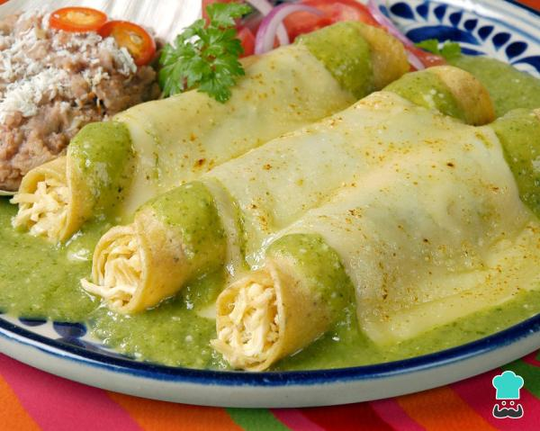

Enchiladas Suizas

Description
Enchiladas are a traditional mexican food. Made from corn tortillas, salsa, chicken and cheese.
The original Enchiladas are made with red sauce but in this variation we will make it with green sauce.
Ingredients
- 3 cups of salsa verde (Herdez or homemade)
- 3/4 cup mexican cream
- 1/2 cup chopped cilantro
- 1 garlic clove chopped
- 2 cups of shredded rotisserie chicken meat
- 1 1/2 cup shredded Oaxaca or Fresh Mozzarella cheese
- 12 corn tortillas
- 1/2 medium onion thinly sliced
- 2 tablespoons vegetable oil
- Salt & pepper
Instructions
- Place 1 cup of de Herdez “Mexican Cooking Salsa Verde, Mexican Cream, cilantro and garlic clove in a blender, process until you have a smooth sauce. Mix with the rest of the Herdez salsa verde and set aside.
- Heat a skillet over medium heat; warm one tablespoon of oil and warm the tortillas one at a time to soften, giving it just a few seconds per side. Add the rest of the oil as needed. Besides softening them for easy rolling, another reason is that we do this is to keep the tortillas from breaking. Transfer onto a plate covered with paper towels to drain any excess oil. Preheat your oven to 350°F.
- Season the chicken with salt and pepper. You can also add garlic powder if you like.
- Spread ⅓ of the sauce in a greased 9″ X 12” baking dish. Or individual oven-proof plates, if you prefer.
- Fill the center of each tortilla with the chicken and roll it up.
- Arrange the enchiladas in 1 layer, seam side down.
- Cover with the rest of sauce; sprinkle with cheese. Bake 25-30 minutes or until cheese starts to brown. Serve immediately and garnish with onion slices.